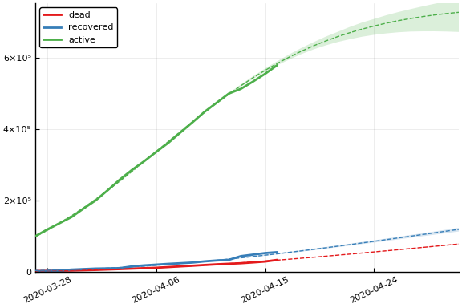
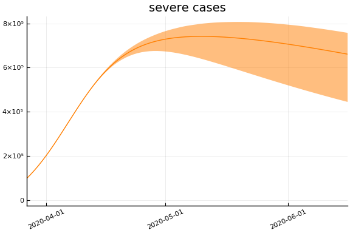
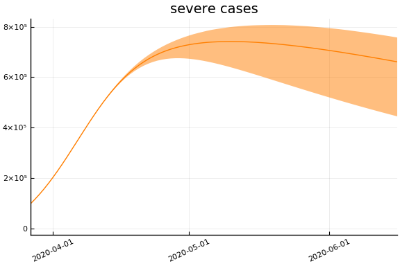
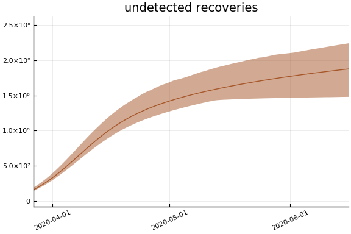
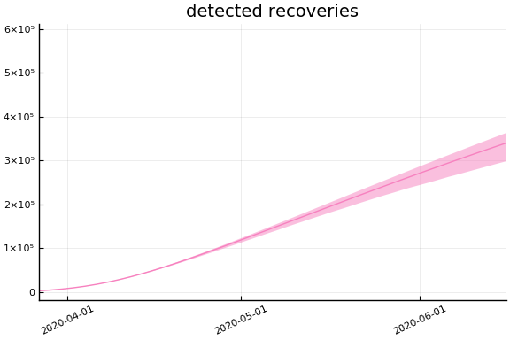
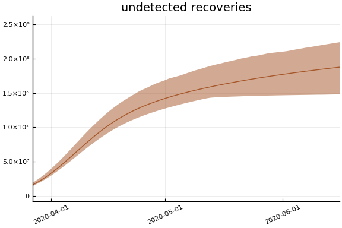
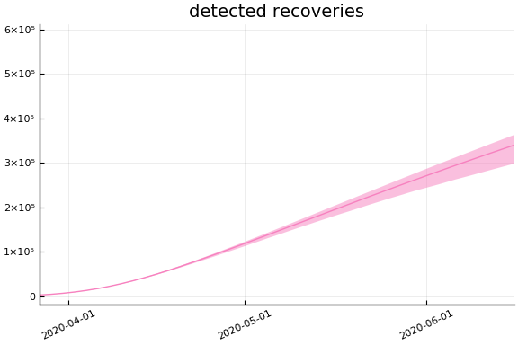

This work is licensed under a Creative Commons Attribution-ShareAlike 4.0 International License
using CovidSEIR, Plots, DataFrames, JLD2, StatsPlots, Dates
Plots.pyplot()
jmddir = normpath(joinpath(dirname(Base.find_package("CovidSEIR")),"..","docs","jmd"))
covdf = covidjhudata();
United States¶
us = CountryData(covdf, "US")
CountryData{Float64,Int64}(3.2716743e8, [1, 2, 3, 4, 5, 6, 7, 8, 9, 10 …
64, 65, 66, 67, 68, 69, 70, 71, 72, 73], [0.0, 0.0, 0.0, 0.0, 0.0, 0.0, 0.0
, 0.0, 0.0, 0.0 … 942.0, 1209.0, 1581.0, 2026.0, 2467.0, 2978.0, 3873.0,
4757.0, 5926.0, 7087.0], [0.0, 0.0, 0.0, 0.0, 0.0, 0.0, 0.0, 0.0, 0.0, 0.0
… 361.0, 681.0, 869.0, 1072.0, 2665.0, 5644.0, 7024.0, 8474.0, 9001.0, 97
07.0], [1.0, 1.0, 2.0, 2.0, 5.0, 5.0, 5.0, 5.0, 5.0, 7.0 … 64475.0, 81946
.0, 99207.0, 118380.0, 135754.0, 153185.0, 177275.0, 200141.0, 228526.0, 25
8792.0])
using Turing
mdl = CovidSEIR.TimeVarying.countrymodel(us)
cc = Turing.psample(mdl, NUTS(0.65), 5000, 4)
import JLD2
JLD2.@save "$jmddir/us_tv_$(Dates.today()).jld2" cc
JLD2.@load "$jmddir/us_tv_2020-04-03.jld2" cc;
Estimates¶
plot(cc)

describe(cc)
2-element Array{ChainDataFrame,1}
Summary Statistics
parameters mean std naive_se mcse ess r_hat
────────── ──────── ──────── ──────── ─────── ─────── ──────
a 0.1498 0.0680 0.0005 0.0050 65.8057 1.3093
pE0 0.0000 0.0000 0.0000 0.0000 64.2570 1.0602
p[1] 0.1184 0.1003 0.0008 0.0078 64.2570 1.5549
p[2] 0.0141 0.0093 0.0001 0.0007 64.2570 2.4426
sigC 899.6472 789.9190 6.2449 62.1384 64.2570 1.1887
sigD 39.6633 20.3205 0.1606 1.5839 64.2570 1.9631
sigRc 472.4292 46.1853 0.3651 3.2761 64.3544 1.2617
β[1] 1.0599 0.5753 0.0045 0.0441 64.2570 1.4672
β[2] 0.6552 0.4150 0.0033 0.0306 64.2570 1.1484
β[3] 0.7229 0.5938 0.0047 0.0425 72.0243 1.2670
γ[1] 0.0356 0.0788 0.0006 0.0061 64.2570 1.6200
γ[2] 0.0153 0.0128 0.0001 0.0010 64.2570 2.6200
ρ[1] 0.8798 0.0841 0.0007 0.0062 64.4496 1.2248
ρ[2] 62.2782 1.3250 0.0105 0.1027 64.2570 1.6054
τ 2.0886 1.4400 0.0114 0.1079 64.2570 1.5383
Quantiles
parameters 2.5% 25.0% 50.0% 75.0% 97.5%
────────── ──────── ──────── ──────── ──────── ─────────
a 0.0751 0.1036 0.1286 0.1814 0.3307
pE0 0.0000 0.0000 0.0000 0.0000 0.0000
p[1] 0.0063 0.0481 0.0740 0.1712 0.3796
p[2] 0.0042 0.0054 0.0107 0.0204 0.0352
sigC 636.3831 692.6607 745.6512 798.9718 4549.9982
sigD 22.0503 25.3386 29.3036 41.8827 84.9655
sigRc 398.6326 434.1788 469.5690 502.9111 567.0858
β[1] 0.3220 0.6564 0.8828 1.2032 2.5174
β[2] 0.1374 0.3930 0.4983 0.8511 1.7395
β[3] 0.0217 0.2564 0.5762 1.1005 2.1287
γ[1] 0.0001 0.0011 0.0024 0.0147 0.3012
γ[2] 0.0025 0.0052 0.0106 0.0240 0.0466
ρ[1] 0.6988 0.8274 0.8916 0.9485 0.9978
ρ[2] 58.8801 62.1055 62.6430 63.0861 63.9437
τ 0.0001 0.2598 2.2407 3.1508 4.5803
Fit¶
sdf = simtrajectories(cc, us, 1:200)
f = plotvars(sdf, us)
plot(f.fit, ylim=(0, maximum(us.active)*1.3))

Implications¶
for fig in f.trajectories
display(plot(fig))
end


 
   
 